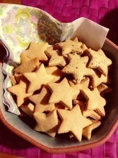

| 2012/12 17 Mon | 320回目*marika |
＼きれいな二つ結び／
健康的な生活をしたい

まりっかです。
**********
 週どれぐらいのペースで
週どれぐらいのペースで
料理するん？
 思い立ったとき、材料があれば...
いつも握手会用に
思い立ったとき、材料があれば...
いつも握手会用に
服買ったりするの？
そんなにお金に余裕ないよ...
 THE MANZAI誰が一番面白かった？
ハマカーンさんの「アニキぃ！」
THE MANZAI誰が一番面白かった？
ハマカーンさんの「アニキぃ！」
はまりました。
ノンスタイルさん面白すぎ！
このカメラは私物なの？
スタッフさんのです。
今までの制服or衣装で
一番好きなのどれ？
制服は...ジャンパースカートかな。
衣装はぐるぐるカーテンがすき。
まりっカメラでメンバーを
いっぱい撮影したん?
いっぱい撮ったー！
載せたい！今データフォルダに
入ってないので今度載せます！
みんな美少女過ぎて...

コンタクト男子と眼鏡男子は
どっちが好きですか？？？
どっちでも^^
あ、お兄ちゃんメガネなんですよ。
私も授業中はメガネです。
どーでもいい←
マフラーっていろんな
巻き方あるじゃん??
ぐるぐる巻いて後ろで結ぶ。
防寒！
**********
なんか昨日のこと、
信じてないようだな...
おらあ

どーだ！今朝作ったったぞ！
はーっはっはっはっはっはっはっは
これで私も女子力が上がった

昨日のより上手くいってよかった。
卵とバター使ってないの。
ジンジャークッキーの
プレーン、きなこ、黒ごま
...うん。家族に食べてもらいます

.........
二期生募集。
前からこの話を聞いていましたが
昨日公式で見てから
急にリアルに感じます。
いや、本当なんだけども。
でも、自分たちが一期生
つまり先輩...
ということになるんですね。
今のままじゃだめだ！
磨かなきゃ。
来年どうなってるのかな？
今日の自分、
ネガティブになったり
ポジティブになったり
わくわくしたり
お腹いたくなったり
落ち着きがない。
坂が更に険しくなるだろう。
でも、登ることをやめません！
これからも背中を押してください。
乃木坂46がもっともっと
大きくなりますように！
まりか
コメント(230)
2012/12/17 22:00